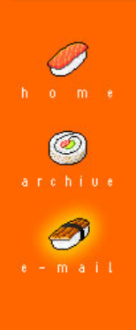
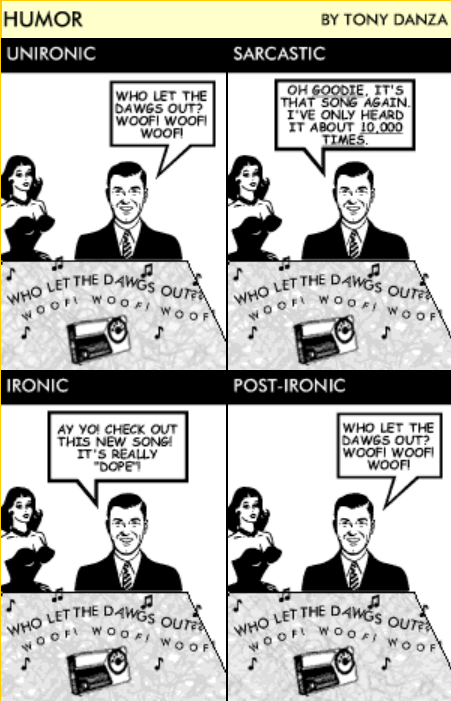
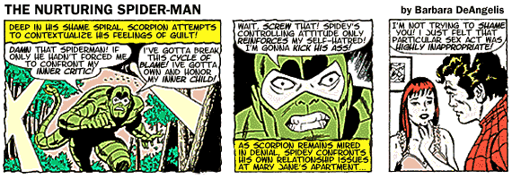
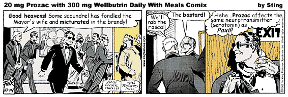

AsianBastard.com was created sometime in 2000 or 2001. Although the Bastard has moved on to other things, I leave behind a collection of my favorite posts as a lasting monument to my towering genius, and to assuage the grief of my millions of admirers at my departure from the weblogging world.
Thanks to all my fans,
Asian Bastard
UPDATE: After a thorough search of AB's archives, we have been unable to uncover any posts that meet any objective standard of "genius." We have therefore cobbled together this random selection of posts, and apologize for the omissions. We will of course post any "funny" or "clever" material should we locate any. -- The Editors
Rudolph the Red-Nosed Stooge
The holidays are a time for goodwill, forgiveness, and generosity of spirit. I'm all about that Christmas Cheer crap, so I'm just going to get this one thing off my chest, and then it's ho ho ho until International Commodity Exchange Day:
There are two things I want to see before I die. One is to walk into Taco Bell someday and see Steve Case asking his shift supervisor for permission to use the john. The other thing is to see my most hated Christmas carol/story fade into long-deserved oblivion.
I'm talking, of course, about "Rudolph the Red-Nosed Reindeer," the "uplifting" tale of a misfit made good. Harmless, innocent entertainment, you says? Conformist propaganda, I says. Let's take a look at the storyline: a genetic freak, Rudolph, is born with a deformity that repels his family and causes him to become a pariah amongst the "normal" reindeer, who snub and ostracize him.
Isolated and unwanted, Rudolph languishes in the untouchable caste of the North Pole community until the head honcho, Santa Claus — who heretofore has taken zero interest in the plight of our hero — realizes that Rudolph's deformity is useful to him, upon which he finally deigns to acknowledge Rudy's existence, if only to press him into service.
Does Rudolph tell Santa to stick it where the sun don't shine? Nope — he cheerfully submits to this crass exploitation, saving Christmas with the very same anomalous appendage that had previously earned him only curled lips and dismissive snorts amongst his benighted brethren. Then, and only then, do the phony bastards condescend to accept Rudy, who, in true Uncle Tom fashion, soaks it up like a sponge, unquestioningly and without a smidgen of rancor.
To which I say, hum-freaking-bug. This song is nothing more than an anthem for conformity and abject submission to the shallow sensibilities of the ignorant masses.What exactly does this song teach children? That it's perfectly okay to revile and humiliate those who are different, unless their freakishness con somehow be put to use for personal gain. And if you're one of the misfits, your goal in life ought to be to appease and serve the very assholes who treated you like shit until they wanted something out of you.
It's all very good that Santa finally comes calling with his hat in his hand, but where the hell was he when Rudolph was being ejected from the reindeer games? What Rudolph should have done was to send Santa running back to his workshop with a candy cane up his rectum. Or at the very least, he should have done the one favor for Santa — for the children's sake — and then told the whole North Pole crew to go screw themselves and buy a goddamn halogen lamp next year. Then he should have flown off to find Hermie and the other Misfit Toys and form a badass Misfit Army to come back and settle Santa's hash for his centuries of mismanagement and incompetence.
But that wouldn't be very holly jolly, would it? And it wouldn't very well serve the ideological purpose of this song, which is to reinforce the status quo by patting the small-minded, unenlightened twits of the world on the back for their oh-so-munificent tolerance, while undercutting the resentment and anger of the budding non-conformist by inculcating them with the spurious notion that your worth as a human being lies solely in your usefulness to society.
Happiness, this song teaches us, lies in servitude to societal values, no matter how corrupt they may be. No doubt the sequel to "Rudolph" would see the red-nosed reindeer leading a cadre of jackbooted thugs on an ethnic cleansing of the North Pole, rounding up the "inferior" members of their society and pressing the useful ones into slavery while shipping the undesirables off to the concentration camp (a.k.a. the Island of Misfit Toys).
Then all the reindeer loved him
As they shouted out with glee,
"Rudolph, the red-nosed reindeer,
Pawn of crass conformity!"
We now return you to your regularly scheduled holiday cheer.
El Tigre Furioso
Paris, 1947. Germaine and I were lunching at the Café Miasme, a charming bistro perched alongside the Canal des Malades Chiens, of the sort that used to blossom like wildflowers in Paris before the war. We were waiting there for the arrival of Germaine's brother, Tito, who had that very day been appointed to DeGaulle's cabinet. Germaine, who I daresay was more anxious for his brother than the man himself, was deeply into his third demitasse of espresso and was positively shaking like a leaf.
"Germaine, old friend," I said, placing a paw on his quivering shoulder. "Calm your nerves. It is a great day for Tito...a great day for France, n'est-ce pas?"
Germaine only shook his head, his eyes never leaving the swirling blackness of his espresso.
"Besides," I continued, casting my gaze out onto the busy Rue de Chat Confus, where crowds of morning shoppers were already congregating outside the booths of the produce vendors and volemongers, "I hear tell that General DeGaulle himself has invited both you and your brothers to the state dinner at Versailles." I glanced at Germaine, hoping my words would bring the touch of a smile to those anxious lips. But he remained unmoved.
Frustrated, I leapt from my chair and, oblivious to the startled gasps of the other patrons, I stood over a shocked Germaine and clutched his shoulders. "Germaine!" I roared. "It is me who stands before you now — El Tigre Furioso — your friend of old! Did we not stand together against the Führer in the Resistance? Was it not I who saved your life at Nantes, at the boulangerie at Nîmes, who sang war songs with you at Avignon? I ask you, dear friend — to whom can you unburden yourself, if not to me?"
Germaine stared up at me with wide, unblinking eyes. "Aiiieee!" he screamed. "C'est un tigre! Aidez-moi! Aidez-moi!"
At that moment, the realization struck me — I did not comprehend a single word of French! Quickly I devoured Germaine and paused only to finish my espresso before making haste down the Rue de Chat Confus to my room at the pension. I was heartbroken, and to add insult to injury, Tito gave me a frosty reception that evening at the state dinner. But I learned a valuable lesson that day, my friends. A valuable lesson indeed, in the vagaries of the human heart.
Humor

Deconstruction of the Nerds
"Nobody's going to be free until nerd persecution ends."
— Revenge of the Nerds
I'm watching Revenge of the Nerds on Comedy Central. Yeah, it's that kind of day. Anyway, two random thoughts on this:
1) This print is amazingly clear. I thought I was watching Revenge of the Nerds IV: Nerds in Love. Did they digitally remaster this film? If so...why?
2) Thematically, this film just gets more interesting with time. I mean, ostensibly, it's about nerds who empower themselves with a "taking back the words they use to hurt us" approach, redefining the "nerd" epithet as a badge of honor and exercising "nerd power" by creating a kind of "geek chic," making nerdiness look cool by emphasizing its advantages — technical wizardry, creativity, and of course, the immortal line "Jocks only think about sports, nerds only think about sex."
But then, this film dates back to 1984, and it's very much "of its time." So most of the things that were supposed to be examples of nerd-cool, such as effeminate Lamar's breakdancing at the fraternity talent show, or the whole Devo-esque synthpop performance, are now hopelessly dated and...nerdy. The impact of the film's "nerds can be cool" message is diluted by the fact that these guys can no longer be seen as cool by most standards. In fact, they seem even dorkier now than they did before their "coming out," so to speak. When Lamar does the "robot" while bloodlessly rapping, "Now clap your hands everybody / And everybody clap your hands," you no longer cheer; you cringe. And the audience's warm response to this seems either nonsensical, or motivated by some sort of ironic appreciation of retro camp humor.
Which brings me to my final point, that, from the perspective of the camp aesthetic, Revenge of the Nerds actually takes on a certain hip cachet simply by virtue of its out-of-fashion sensitibilities passing, between 1984 and 2000, from cool to uncool and finally back to cool, as kitsch, 80's style. Unlike a film such as, say, Ferris Bueller's Day Off, which taps into a more universal and mainstream aesthetic and therefore passes smoothly, for the most part, from unironic 80's cool to ironic, iconic 80's cool, Revenge of the Nerds becomes a far more complex and multilayered work with each passing year. Is anyone still reading this far? God, I hope not. I sure as hell wouldn't be. Heck, I could probably write anything at this point and no one would even notice. Hee hee. Ilsa yanked Frieda to her feet and slapped her hard across the face. "Talk, or you'll suffer the fate of your companions!" she screamed. Frieda, still dazed from Dr. Winterbottom's elixir, blinked uncomprehendingly. Ilsa sighed, grabbed Frieda roughly by the chin, and turned her face toward the far wall of the cell. In the corner, Pauline and Raffaela lay on the floor in chains, unconscious, covered from head to foot in lemon meringue. Frieda gasped. The dwarf in the tattered clown costume glanced up, startled, nearly dropping his Magic Marker. Then his watery eyes glinted as he
Ask Jesus

Dear Jesus:
At the beginning of a new millennium, I find myself growing more and more despondent over the sorry state of our world. I am depressed and unhappy. What can I do?
Millennial Angst
Dear Millennial,
Although depression is a serious and unfortunate condition, you are in excellent company. Elijah's discouragement, as related in 1 Kings, Chapter 19, is one of the classic accounts of depression in the Bible. Elijah found himself in despair, and felt useless even to God. Elijah's depression was caused in part by physical problems, including sleep deprivation and malnutrition. Could your physical condition be affecting your mood? Elijah began his return to health with food and rest.
Elijah saw no way out of his condition because he was focusing his attention on his immediate circumstances. God, however, told Elijah in no uncertain terms to take his eyes off his present situation and back to God. Elijah finally overcame his despair by gaining a fresh vision of God's love for him.
Depression is a common ailment in today's world, and it seems that with each day that we grow nearer the end of the century, more and more people are affected by anxiety and hopelessness. But do not lose hope. Believe that God loves you. You have proof of this in the fact that He sent Me, His Son, to die for you. Do not listen to your feelings of the moment. Rather, trust God's love for you as He has revealed in His Word.
"God has said, 'Never will I leave you; never will I forsake you.' So we say with confidence, 'The Lord is my helper; I will not be afraid. What can man do to me?'" (Hebrews 13:5-6).
Love,
Jesus
With the dawning of the new millennium, Christ the Lord has returned to us, this time as the web's premier advice columnist. Jesus's column appears here very Monday.
Ask Jesus Again
Dear Jesus: A few months ago my girlfriend convinced me to dress up like a woman. It was supposed to be a joke, but I actually kinda liked it. Now I secretly try on her clothes when she's not around. Am I sick?
I Enjoy Being a Girl
Dear Enjoy,
I can appreciate your concern about the practice of cross-dressing. For a person to dress up as the opposite sex for the sake of satisfying emotional or sexual needs is forbidden by Me. Deuteronomy 22:5 says, "A woman must not wear men's clothing, nor a man wear women's clothing, for the Lord your God detests anyone who does this." Your biological sex is My design for your lives, and I do not intend for you to disguise or seek to change it. Cross-dressing is practiced by some heterosexuals, transsexuals, and some homosexuals. The underlying motivation is complex and may vary from person to person, but the practice is not acceptable to Me.
Even though I condemn the practice of cross-dressing, it is important to realize that I love you with the kind of love that you cannot fathom, but that each of you longs for. If you have not experienced My love and forgiveness and have not placed your faith in Me as your personal Savior, I would urge you to do so. If you have received Me as your Savior and Lord, My Spirit then dwells within you and will deliver you from sinful behavior patterns as you yield your life to My power and direction.
Remember that temptation in itself is not sin. Every person is tempted in a variety of ways. Even I was tempted (Hebrews 4:15). I believe 1 Corinthians 10:13 will be helpful to you: "No temptation has seized you except what is common to man. And God is faithful; He will not let you be tempted beyond what you can bear. But when you are tempted, He will also provide a way out so that you can stand up under it." (Hebrews 13:5-6).
Love,
Jesus
With the dawning of the new millennium, Christ the Lord has returned to us, this time as the web's premier advice columnist. Jesus's column appears here very Monday.
Olive Garden Review
This is my cousin Giorgio from Italy. Word has it that he knows Italian food like nobody else! So last night we took him to Olive Garden. He orders the Capellini Pomodoro, with Roma tomatoes, garlic, fresh basil and a touch of balsamic vinegar.
He takes a bite and throws his fork down. "What the fuck is this shit?" he says. "What are you talking about?" I say, "It's fuckin' Capellini Pomodoro!" He says, "Che cazzo stai dicendo? You gotta be kidding! This shit I wouldn't feed to my dogs!" So I says, "Hey, cugino, don't break my fuckin' balls here. It's Italian!" And this fucking mutt, he says, "Testa di merda, nessuno me lo ficca in culo! I just came here from Napoli, don't tell me this shit is Italian, they wouldn't sell this even in the hypermart! Get me outta this place, it's a disgrace to the Italian people! È un disonore!"
Nobody talks to me that way, I don't care if he's my own brother, he talks to me like that, I'm gonna break my foot off in his freakin' ass, right? So I says, "Hey, finocchio, get the fuck outta here, go back to fuckin' Italy and eat your genuine fuckin' Italian food!" And I dump the plate right into his fuckin' lap. Well, then Giorgio gets mad, right? He screams "Vaffanculo!" and lunges at me like he's gonna hit me or somethin', so I bust his fuckin' head for him and he goes down face first right into my wife's eggplant parmigiana, which is lightly breaded eggplant, fried and topped with marinara, mozzarella and parmesan.
So then I'm getting ready to break this pistolino's arms when the waitress comes by with the bruschetta, sees what's going on, and starts screaming. So then we all hadda get outta there quick, you know what I'm sayin'? Anyway, Olive Garden -- when you're there, you're fuckin' family.
The Dark Side of Fame
Cheers to BoyKani, the latest weblogger to be consumed by that crazed starmaking machine known as Blogs of Note. Sure, it's all good right now, but take it from me, man...there's a dark side to fame. It's easy to be seduced by the perks of stardom. Sex. Drugs. One-legged transvestite prostitutes. But it's not all fun, you know. One day you wake up in a hotel room in Amsterdam with a massive hangover and find yourself lying between a pair of leather-clad midget biker chicks, and not only is the money gone, but you dimly recall trying to use one of the midget biker chicks' butt-cracks as an ATM. You think to yourself, I'm holding an empty bottle of Night Train. Why don't I have to pee? Then you put your hand down there and think: I'm wearing a diaper. Then you glance down and you realize: Wait, that's not a diaper -- that's my mom's lace tablecloth. You look around and the epiphany hits you, with the force of a physical blow: you're not in a hotel room in Amsterdam after all. It's Thanksgiving, and you're lying on top of your parents' dining room table with your private parts lodged in the turkey. That's when you realize the party's over. Sounds crazy, I know. But that's what fame does to a guy. One day you're posting fake nudes of Britney Spears to your weblog, the next day you're being questioned by National Park Rangers about a string of raccoon molestations in the tri-state area. Fame is a whore. Not only that, but it's the "bad" whore, not the good one who looks like Nicole Kidman and doesn't have five kinds of syphillis doing the "robot" in her crotch. No, this is the one who lures you back to her cheap motel room with the promise of a $10 half-and-half and ends up cold-cocking you after you double over with vomiting when you see her in a decent light and realize that she looks like post-Parkinson's Muhammad Ali after ten rounds with George Foreman's indoor grill. That's the kind of whore Fame is. And Blogger is her pimp.
If I sound bitter and cynical, well...it's because I'm feigning those qualities for humorous effect. But the point is, Fame is ephemeral. It's shallow. It's a tasty snack that has no nutritional value. The enlightened soul cares not for such things. I sure don't. I mean, yeah, I'd kinda like Ev to win a free round the world trip or something so I can hang onto my last remaining days as a Blog of Note until I slip off, screaming, my fingernails still embedded in the very living rock of the Temple of Popularity, spiraling down into the stinking bottomless abyss of anonymity. But other than that, I'm so above all this. I embrace my imminent return to "Where Blog They Now?" status. I really do.
Where was I? Oh yeah: congrats, BoyKani! Rock on dude!
Laughing on the Outside: The Confessions of Soupy Sales
You know, these days people think of Soupy Sales as just a washed-up comedian. They look at me and they see nothing more than a has-been funnyman, a guy past his prime whose star has long faded. Kids today, they don't know from history. I go to one of these fancy schmancy techno nightclubs, the bouncer won't even let me in, the jerk. I gotta slip him a C-note just to let me use the goddamn john. Used to be I'd walk into any joint on the Strip, you name it -- the Tropicana, the Sands, Caesar's -- and the place would go nuts. Clappin', hootin', yellin' "Hey Soupy! Soupy, you're the best! Throw me a pie, Soupy!"
I didn't buy a single drink from 1965 to 1977. The phone rang off the hook night and day. Sammy, Frank, Dino -- they all wanted to be on my show. And the broads? Get outta here! Listen, if you took all the broads I banged and laid 'em end to end down Sunset Boulevard, you'd have one helluva sore dick by the time you got to La Cienega, you know what I'm sayin'? Heh heh...I guess that was a little blue, sorry.
I didn't always hafta work blue, you know. In '75 when I was doing Jr. Anything Goes for ABC, Fred Silverman came to my trailer one day during rehearsals. "Soupy," he said, "the kids just aren't tuning in like they used to. The boys upstairs are saying we've gotta spice up the show a little, you know, bring in some broads, show a little skin, maybe tell some dirty jokes, get the crowd goin'."
"But Fred," I said, shaking my head. "This is a Saturday morning kids' show. We've got standards to uphold. What am I gonna tell the parents when they call in asking me why their rug monkeys are sitting there watching half-naked showgirls on TV?"
"We want broads and dirty jokes on the show," Fred replied. "If you don't like it, we can always bring in Skip Stevenson."
I didn't even have to think twice. I looked that bastard straight in the eye and said, "Anything you say, Mr. Silverman!" So the naked chicks went on. What can I tell you? It was the height of the Sexual Revolution. If this AIDS thing hadn't come along, they'd be banging sheep on Sesame Street by now. We lasted two more episodes, and ABC finally yanked the show after a naked dwarf put his eye out trying to stuff a gerbil into Lyle Waggoner's nether regions and threatened to sue.
After that, my career pretty much went on the skids. I've kept working -- a commercial here, a skin flick there -- enough to keep me in blow, at any rate. But things ain't what they used to be. Still, this old hoss ain't exactly ready for the glue factory. I've got a life to live. I've got love in my heart and in my soul. I've got it in my hand, too, and I'm aiming it right at all of you fans out there who still remember the old Soupster. I'm not going anywhere, baby. I'm down, but I ain't out.
The Nurturing Spider-Man

Joke of the Day
A 60 year-old woman came home one day and heard strange noises in her bedroom. She opened the door and discovered her 40 year-old daughter playing with a vibrator.
"What are you doing?" asked the mother.
"Mom, I'm 40 years old and look at me. I'm ugly. I'll never get married, so this is pretty much my husband." The mother walked out of the room, shaking her head.
The next day, the father came home and heard noises in the bedroom and upon entering the room, found his daughter using the vibrator.
"What the hell are you doing?" he asked.
His daughter replied, "I already told Mom. I'm 40 years old now and ugly. I will never get married, so this is as close as I'll ever get to a husband." The father walked out of the room, shaking his head.
The next day, the mother came home to find her husband with a beer in one hand and the vibrator in the other, watching a football game on TV.
"What on earth are you doing?" she cried.
The husband replied, "What does it look like I'm doing? I'm having a beer and watching football with my son-in-law!"
"That's in very poor taste," the mother said sternly.
The father looked down at the torpedo-shaped piece of plastic in his hand. He dropped it to the carpet and put his arm over his face. He burst into tears.
"God, what am I doing?" the father said, sobbing. "Our only daughter is upstairs losing herself in despair and negativity, and I'm sitting here feeling sorry for myself!"
The mother went to her husband and put a comforting arm around him. "It's okay," she said softly. "Let it out."
"I probably look like a real jerk right now, crying like a baby," the father husked, his voice quavering.
The mother tenderly stroked the father's silvery hair. "You're not a jerk for crying," the mother said. "I've been waiting forty-two years for you to finally open up to me!"
"God, I love you," the father said, holding his wife more tightly than ever.
"I love you, too," the mother said. "Now, let's go upstairs and help our daughter through her difficult time."
Hand in hand, husband and wife walked up the stairs. Neither knew what the future would hold for them or for their family, but they knew that today, they had crossed the most important threshold of their lives together -- the threshold of the heart.
The Nurturing Spider-Man, Part II

The Confessions of Jay-Z
Editor's Note: Asian Bastard is currently on vacation. In his absence, we are pleased and honored to welcome as guest blogger the hip hop artist Jay Z.
Hard Knock Life
At the outset of my first blog entry for Asian Bastard, I'd like to thank Mr. Bastard for the opportunity to express myself in this forum. As a rap artist, it is a rare opportunity indeed when I am able to speak my mind freely, outside of the constraints of my chosen art form. Though my lyrics and stage persona may suggest otherwise, the hip hop lifestyle is not merely what is referred to in the vernacular as "bitches and money." Indeed, the myriad demands of the "thug life" and the need to satisfy the fans can place an onerous burden on even the most stalwart rap musician.
Like many hip hop artists, I got my start on the Borscht Belt, playing resorts and nightclubs in the Catskills during the lucrative summer season. Though some of you may imagine the resort circuit as a romantic escapade, for a struggling young unknown like myself it was anything but. At Grossinger's, for instance, one of the swankiest hotels in the Catskills, I rarely enjoyed the luxurious amenities the resort provided; rather, I spent my days onstage in the auditorium, rehearsing under the apprenticeship of such legendary old school performers as Shecky Greene, Red Skelton (God rest his soul), and Grandmaster Melle Mel. It was a demanding life, but I was on Cloud Nine, fulfilling a lifelong dream of singing and dancing, and pursuing an even grander vision of stardom. As Shecky told me once, "If you want it, you need only dream it." I have kept those words close to my heart ever since.
During my apprenticeship, I often kept the company of other young artists, some of whom went on to achieve great success. For instance, perhaps the name Anne Murray means something to you? Today she has millions of fans around the world, but "back in the day" she was just another struggling singer/songwriter. Annie and I were best pals from the beginning. She helped me through some tough times, and I was a shoulder for her to cry on when she hit the many potholes on her road to fame. In fact, her song "You Needed Me" was inspired by our friendship. When I hear that song, and such lyrics as "You held my hand / When it was cold / When I was lost / You took me home / You gave me hope / When I was at the end / And turned my life / Back into truth again," it's hard to keep the tears from springing to my eyes, I kid you not! I haven't talked to Anne in many years, but she remains one of my closest friends.
Now, this isn't a very well-known fact, and I have actually only told this story to a few close friends, but my first real break in the business came at the hands of none other than showbiz legend Buddy Hackett. He was just finishing up a smash run on Broadway with The Music Man, and I was fortunate enough to attend one of his farewell performances. Backstage, I ran into an old Catskills chum who happened to be Buddy's road manager. The next thing I knew, I was in Buddy's dressing room, face to face with one of my greatest idols! Now, Buddy has a rep for being a hard-nosed, abrasive fellow, but I must have caught him on a good night, for he was unfailingly kind to this struggling rap artist. "Kid," Buddy said, chomping on a huge Cuban cigar that must have cost more than my monthly salary, "this business is all about image. It's all about marketing yourself. Find your niche and play it for all it's worth."
Wise words indeed. I thanked Buddy and prepared to leave his dressing room. As I turned, Buddy added, "You got talent, kid! I haven't seen hip hop stylin' like yours since Big Daddy Kane rocked the house at the Tropicana." I was stunned! Tears sprang to my eyes as I thanked Buddy profusely for his extravagant -- and totally undeserved -- praise. Buddy not only accepted my thanks, but put in a good word for me at Caesar's Atlantic City, where I had my first "real" show.
And the rest, as they say, is history. My rise to stardom is already amply documented, so I won't go into it here. But now that I'm at the top of my game and rousing audiences to their feet from Atlantic City to Fresno, I haven't forgotten my Borscht Belt roots or the people who brought me here. And no matter where I go from here, I'll always have a song on my lips and love in my heart for my mentors and fellow travellers on the long hard road to success. "Big ups" and "props" to all of my "homies!"
Humanitarian Daily Ration Cookbook
Sample Recipes:
HUMANITARIAN DAILY RATION (HDR) CASSEROLE
Ingredients:
1 Humanitarian Daily Ration (HDR)
1/2 cup goat's milk
1 tsp. salt
1 cup water
Instructions:
1. Heat contents of one (1) HDR in 1 cup water
2. Combine contents of HDR with goat's milk
3. Add salt to taste and stir until mixed
4. Pour into baking pan and bake in preheated oven at 400° until top is
golden brown
5. Rise up against Taliban oppressors
DAILY RATION (HDR) WITH LENTILS
Ingredients:
1 Humanitarian Daily Ration (HDR)
1 cup lentils
1/2 cup onion, chopped
1 tsp canola or olive oil
Instructions:
1. Combine HDR with onion and lentils in large skillet
2. Sauté in oil at medium-high heat, stirring frequently, until onion
is tender
3. Serve over rice or pasta
4. Locate and assassinate Osama bin Laden
ORANGE GLAZED HUMANITARIAN DAILY RATION (HDR)
Ingredients:
1 Humanitarian Daily Ration (HDR)
1/2 cup honey
1/4 cup orange peel, grated
1 tbsp brown sugar
1 can frozen orange juice concentrate
Instructions:
1. Combine honey, brown sugar, and orange peel in large bowl
2. Add thawed orange juice concentrate and stir until mixture is smooth
3. Stir in contents of HDR
4. Pour into baking pan and bake at 375° for 30 minutes, basting at intervals
5. Recognize the legitimacy of the U.S.-led global coalition against the terrorist
network
6. Serve over rice
Ask Jay-Z
Dear Jay-Z,
Over the past twenty years, I have accumulated a massive stockpile of pornographic materials. My wife disapproves of my hobby and wishes me to throw away my collection. I do not wish to discard my porn collection as it is my only source of the physical pleasure my wife no longer provides me. What should I do?
Sincerely,
Porn Again Christian
Dear Porn Again,
I appreciate your honesty in sharing your struggle with pornography. Easy access to pornography on the Internet has become a trap for many in recent years, resulting in personal suffering, broken marriages, and unhappy homes.
God gave the gift of sex to us. He intended for it to be something wonderful, producing new life and marital pleasure. But that gift becomes destructive when we make it a means for our own selfish gratification, instead of an expression of love within marriage, as God intended. When we use sex selfishly, we see others merely as things instead of people--humiliating and debasing people. Pornography serves to inflame our lusts, and our lusts easily make us their slaves.
If a person responds to a sexual temptation by willfully entertaining a lustful fantasy or by an intention to act immorally, Jesus indicates that he is committing sexual sin in his heart; see Matthew 5:27-38. Things are not as hopeless as they may seem, because God promises victory over temptation. The Bible says, "No temptation has seized you except what is common to man. And God is faithful; he will not let you be tempted beyond what you can bear. But when you are tempted, he will also provide a way out so that you can stand up under it" (1 Corinthians 10:13). However, it is important that we do our part by avoiding the places and things which trigger lust and by focusing our mind on Christ and things that are wholesome (Colossians 3:1-4; Philippians 4:8).
Avoiding pornographic sites on the Internet may require using filtering software, placing our computer in an area of our home where it can be observed by others, giving someone access to our saved files, or eliminating use of the Internet altogether. Radical problems require radical solutions if we are to walk in the freedom Christ desires for us. For information about software to filter out pornographic sites, contact Focus on the Family, P. O. Box 35500, Colorado Springs, Colorado 80935, telephone: (719) 531-3400.
It would be wise to share the fact of your struggle with a trusted friend or a support group. Being accountable to someone can help you pursue the freedom you desire. Sharing your struggle with a gospel-preaching pastor or a professional Christian counselor would also be very useful. Books which you may find helpful are HOW TO OVERCOME A STUBBORN HABIT by Erwin Lutzer, FINDING THE FREEDOM OF SELF-CONTROL by William Backus, and FALSE INTIMACY by Harry Schaumburg. These books would be available at most Christian bookstores.
Best Wishes,
Jay-Z
Bad Existentialist Fiction
"My field," said Werther, lighting a long black cigarette, "is time."
"That is indeed absurd speech," I replied. "What, in fact, is the absurd man? What is his field, his action?"
Werther sneered; or perhaps it was only the harsh smoke from his unfiltered Gitanes irritating his mucous membranes. "What is the absurd man? He who, without negating it, does nothing for the eternal. Not that nostalgia is foreign to him. But he prefers his courage and his reasoning. The first teaches him to live without appeal and to get along with what he has; the second informs him of his limits. Assured of his temporally limited freedom, of his revolt devoid of future, and of his moral consciousness, he lives out his adventure within the span of his lifetime. That is his field, that is his action, which he shields from any judgment but his own. A greater life cannot mean for him another life. That would be unfair. The certainty of a God giving a meaning to life far surpasses in attractiveness the ability to behave badly with impunity. The absurd does not liberate; it binds. It does not authorize all actions. The absurd merely confers an equivalence on the consequences of those actions. It does not recommend crime, for this would be childish, but it restores to remorse its futility. Likewise, if all experiences are indifferent, that of duty is as legitimate as any other. One can be virtuous to a whim."
"I understand everything you are saying," I lied. Inside my guts were as warm Brie. Warily, I watched him sip his espresso. What could I say that could match this formidable expression of genius?
Luckily, I never had to face my fear. Consumed by the awareness of his own insignificance in the face of a Godless universe, Werther snatched a pistol from his coat and blew his brains out all over my cheesecake.
March of the Vienna Fingers
I want to thank my friends from Arcturus for letting me join them on their journey through the stars. When they showed up at my door I was a little frightened at first, but they were very patient, and explained their mission to me in great detail, and then showed me their spaceship. They asked me to come with them to the Crab Nebula (of course they have their own name for it, but I would probably just insult them if I tried to write it out phonetically). I didn't know why they wanted me to go with them. What's in the Crab Nebula? I asked. They said it would make everything beautiful. I said that would be great, but what about my dog? They said my dog would also be beautiful. Oh yes! So I am going to go with them to the Crab Nebula, and they will make me into a shiny robot. A big shiny Asian robot. Vroom! Don't breathe, don't even cough, just stand very still for hours and hours, and then spin around very suddenly with your arms outstretched.
Beyond the Infinite
The Grand Slam convention in Pasadena was a lot of fun. Pretty much the entire "Trek" cast was there -- even Robert DeNiro, who wasn't even scheduled to appear. Needless to say, the fans were wetting themselves with surprise when DeNiro popped onstage. He regaled the crowd with a bunch of amusing anecdotes from the TOS years, like the time Donald Sutherland glued his Spock ears to DeNiro's butt during the filming of "Amok Time." Chloe Sevigny reduced the audience to tears with her poignant story of how the former Yeoman Rand struggled back from drug and alcohol addiction after TOS's cancellation. I was surprised to see Anthony Hopkins on the same stage as DeNiro considering their well-publicized antagonism, but I assume Hopkins was well-paid for his appearance...Hopkins talked at length about how challenging it was to step into the role of Dr. McCoy after Bob Denver's untimely death. The biggest surprise of the evening, though, was when Trek executive producer David O. Selznick appeared with brand new clips from the upcoming "Star Trek X: Nemesis." Without giving away any spoiler details, let me just say that "X" marks the spot -- for the best Trek outing since "Wrath of Khan"! The entire cast was outstanding in the scenes we were shown, especially the ones featuring Worf, which should allay any fears among the fans that Sidney Poitier would turn in yet another lackluster performance as Trek fandom's most lovable Klingon. For me, though, the highlight of the evening was when I ran into DeNiro backstage! I'd heard some horror stories about DeNiro's arrogance toward the fans, but I found him to be completely affable and easygoing, even though I probably came off like a complete dork, asking him to sign my 8x10 photo of Kirk fighting the Gorn. I asked DeNiro if he was tired of being typecast as James T. Kirk for so many decades -- DeNiro just gave me his trademark grin and said he'd be delighted to play the captain of the Enterprise until "God beams me up to the final frontier!" (And ladies, let me confirm that his hair is 100% real.) This was an awesome con overall...it definitely raises the bar for FutureCon later this year....
Missing You
John Waite sat at the table in his dressing room, wiping sweat from his face with a cool, damp washcloth. In the distance, he could still hear the screams of his fans out in the arena. Another successful stop on his American tour. Another five thousand teenaged girls clutching his album to their chests as they drifted off to sleep tonight.
Where am I, anyway? John wondered idly as he pulled his sweat-soaked t-shirt over his head and tossed it into a corner. He had already forgotten which stop of the tour he was at. After a while they all blurred together. John could remember a time when every gig had seemed as precious as a diamond; thinking about those early days now made him sad in a way he could never express in one of his frothy pop singles.
Nostalgia, in turn, made him think of Cynthia. Where was she now? John wondered. Was she happy? He hoped so, despite everything that had happened between them, the harsh words that now seemed to be the only ones he could remember from their relationship.
A memory of Cynthia flooded John's mind then, startling him with its vividness. It was their first meeting, after one of his small club shows in Lancaster, before the album had hit. She had caught John's eye immediately, blonde hair spilling out over her headband, a glittery short purple dress that barely covered her thighs, lovely legs clad in silver tights and purple legwarmers. He had flashed his most charming smile and bought her a drink. Hoping merely to get lucky, by the end of the evening he was ready to propose marriage to her.
John poured himself another glass of Veuve Cliquot and slumped back in his chair, melancholy washing over him. Cynthia. Why couldn't he get her out of his mind? Why couldn't he move on? Certainly it wasn't the lack of available female companionship; he'd already been propositioned by several female acquaintances who didn't even know that he and Cynthia had split up -- and of course there were always the groupies. John hadn't been able to bring himself to take advantage of either, however, in the months since the breakup. The notion of intimacy with a woman -- physical or emotional -- only brought more painful thoughts of Cynthia.
He hadn't heard from her in weeks, and John wondered what was going on in her life -- if she had moved on and found someone new. He found it disturbing that people who were so inextricably -- or so he had thought -- intertwined could suddenly live such completely separate lives. Did she even think of him anymore? John wondered. Or had he already become irrelevant?
That thought made him angry, and it was never more than at those moments that he wished he could simply erase all memory of Cynthia from his mind and move on with his life. Why did she haunt him so? It wasn't as if she were perfect for him; indeed, in many ways they were total opposites. Neither of them could explain their attraction to the other; it was simply something that had happened between them, like an explosive chemical reaction between two apparently harmless substances.
John looked at the telephone on the table in front of him. It would be so easy to pick up the phone now and dial her number, beg her to take him back. Only pride kept him from doing so -- he could never allow Cynthia to know how much he missed her, how desperate he was to have her back in his life. And hadn't Cynthia been the one to desert him in the first place? The part of him that was still angry was tired of chasing after her all the time. Forget that bitch, that dark part of him whispered. Find a girl who won't throw you away like a used Kleenex as soon as she's done with you.
It all made sense to John -- Lord knew his friends thought so -- and yet something within him still yearned to have Cynthia near him again, to hear her laughter and feel the bright light of her spirit warming his chilly British heart.
Before he realized what he was doing, John picked up the receiver and began to dial. He felt certain that he would get her answering machine anyway, this late on a Saturday night. It rang twice, and then someone picked up the phone.
"Hello?" It was Cynthia's voice. John's breath caught in his throat. What was he supposed to say? A moment ago he had known, but now he found himself tongue-tied. The confident swagger of his onstage persona was nowhere to be seen in the nervous, sweating idiot John saw in the mirror.
"Hello? Is anyone there?"
The sound of her voice poured into the empty vessel of John's heart like cool wine into a dusty glass. His hand trembled on the receiver as he listened to her soft breathing from God knew how many thousands of miles away. He could not bring himself to speak, but from his heart he sent every unspoken word, everything he longed to tell her, down the telephone line, like a telegraph to her heart.
At last John opened his mouth to speak, but at that moment he heard the click as Cynthia hung up the phone. After a pause John set the receiver down and cradled his head in his hands.
A knock sounded at the door of his dressing room. "John!" It was his manager, Bernie. "Let's hit the road, man -- Cleveland awaits!"
"Be there in a second," John called out. He wiped the cloth over his face one last time and then stood up, checking his look in the mirror. Get it together, man, he thought. Yes, losing Cynthia had sucked, but there was a whole world out there to conquer. Legions of screaming fans went a long way toward soothing one's heartbreak.
Soon he would be in Cleveland, and after that a dozen other cities; soon Cynthia would be no more than a dim memory. John slipped into his white linen jacket and strode toward his dressing room door. He would be okay. If he tried hard enough, in fact, he could even convince himself that he didn't even miss her at all.
"I ain't missing you, babe," John murmured as he opened the door. It sounded true even to himself.
Prozak Comix

NyQuil Comix

For Skattie.